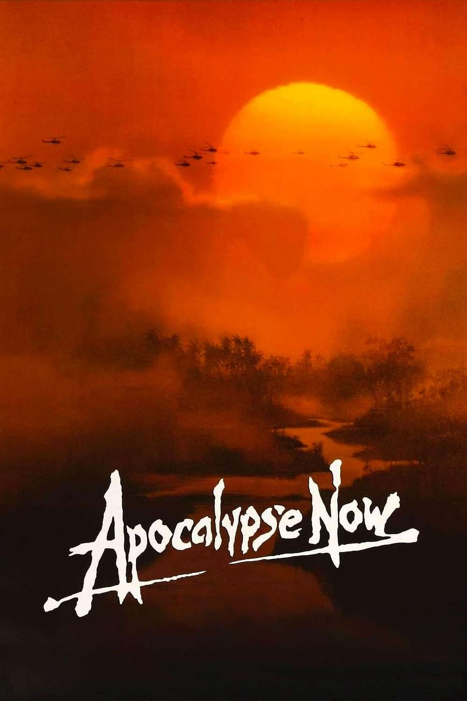

Top 5 Filmes Favoritos
Esta página apresenta meus filmes favoritos, com imagens, trailers e sinopses detalhadas. Explore a lista e descubra mais sobre cada título.
1. Mad Max: Estrada da Fúria

Sinopse e trailer
Em um futuro distópico, Max Rockatansky (Tom Hardy) se une à Imperatriz Furiosa (Charlize Theron) para escapar de Immortan Joe. Eles enfrentam perigos implacáveis em uma jornada pelo deserto.
2. Duna: Part Two

Sinopse e trailer
Paul Atreides (Timothée Chalamet) se junta aos Fremen para lutar contra os Harkonnen. Ele deve aceitar seu destino como Kwisatz Haderach e liderar a revolução em Arrakis.
3. Cidade de Deus

Sinopse e trailer
Buscapé (Alexandre Rodrigues) cresce na favela Cidade de Deus, sonhando em ser fotógrafo, enquanto enfrenta a violência das gangues lideradas por Zé Pequeno e Mané Galinha.
4. Ponyo
Sinopse e trailer
Sosuke encontra uma peixinha dourada mágica chamada Ponyo. Ao tentar se tornar humana, Ponyo desequilibra os mundos humano e marinho, levando a uma aventura para restaurar a harmonia.
5. Apocalypse Now
Sinopse e trailer
Durante a Guerra do Vietnã, o Capitão Willard (Martin Sheen) recebe a missão de eliminar o Coronel Kurtz (Marlon Brando), que enlouqueceu e lidera uma tribo na selva.
📊 Comparativo dos filmes
| Título | Ano | Diretor | Gênero |
|---|---|---|---|
| Mad Max: Estrada da Fúria | 2015 | George Miller | Ação |
| Duna: Part Two | 2024 | Denis Villeneuve | Ficção Científica |
| Cidade de Deus | 2002 | Fernando Meirelles | Drama |
| Ponyo | 2008 | Hayao Miyazaki | Animação |
| Apocalypse Now | 1979 | Francis Ford Coppola | Guerra/Drama |